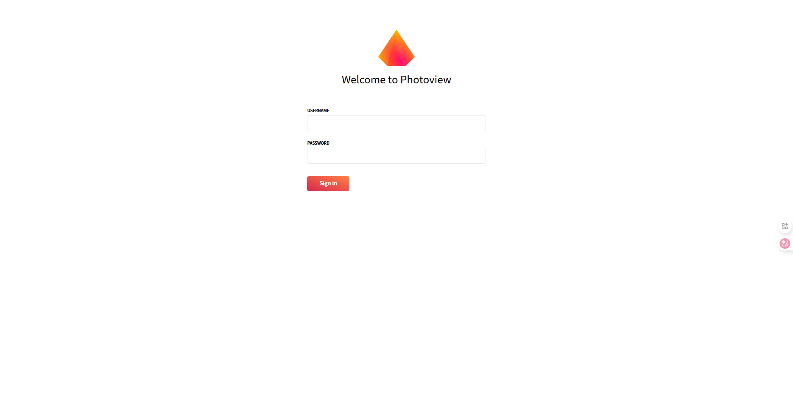
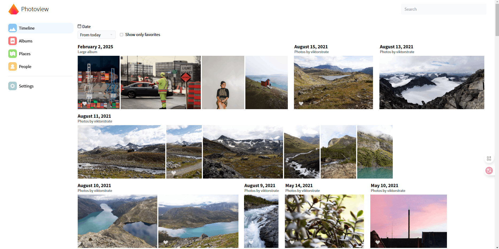
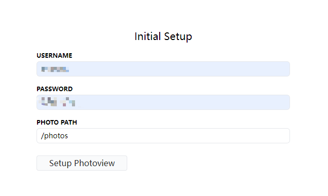
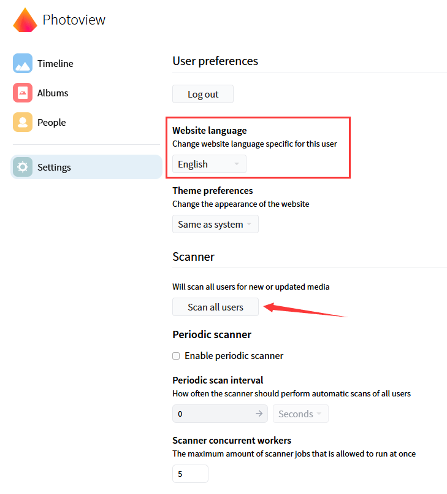

Version：photoview 2.4.0

# 介绍
Photoview 是一个简单且用户友好的照片库，是专为摄影师制作，旨在提供一个简单且快速的方式来导航目录，其中包含数以千计的高分辨率照片。
您可以将 Photoview 配置为在文件系统的某个目录中查找照片和视频。 扫描仪会自动拾取您的媒体并开始生成缩略图图像，以使浏览速度加快。
当您的媒体被扫描后，它们会显示在网站上，其组织方式与文件系统相同。
特点：
- 保持与文件系统架构一样的目录显示。
- 多用户管理。
- 支持公共链接共享，并可选密码保护。
- 支持 RAW 文件格式和 EXIF 解析。
- 支持多种常见视频格式，并自动针对网络优化。
- 自动人脸识别，并按人像分组。
- 支持低中高分辨率，优先加载缩略图。
- 所有媒体资源受 Cookie 令牌保护，所有密码经过哈希处理，API 采用严格的 CORS 策略。
项目地址：https://github.com/photoview/photoview

# 安装
创建 photoview 配置文件夹及相册存放位置：
# $PATH 为你的相册存放路径 | ||
mkdir -p /app/photoview | ||
mkdir -p /<$PATH>/pictures | ||
cd /app/photoview |
根据官方说明，由于配置参数过多，因此采用 docker compose 的方法，添加 docker-compose.yml 配置文件：
vim docker-compose.yml |
写入：
services: | |
photoview: | |
image: viktorstrate/photoview:latest | |
hostname: photoview | |
container_name: photoview | |
restart: always | |
user: root | |
stop_grace_period: 10s | |
ports: | |
- "2430:80" ## HTTP port (host:container) | |
## This ensures that DB is initialized and ready for connections. | |
## Comment out the entire `depends_on` section if PHOTOVIEW_DATABASE_DRIVER is set to `sqlite` in the .env | |
depends_on: | |
mariadb: | |
condition: service_healthy | |
## Security options for some restricted systems | |
security_opt: | |
- seccomp:unconfined | |
- apparmor:unconfined | |
environment: | |
PHOTOVIEW_DATABASE_DRIVER: ${PHOTOVIEW_DATABASE_DRIVER} | |
## Comment out the next variable in the case PHOTOVIEW_DATABASE_DRIVER is set to `sqlite` or `postgres` in the .env | |
PHOTOVIEW_MYSQL_URL: "${MARIADB_USER}:${MARIADB_PASSWORD}@tcp(photoview-mariadb)/${MARIADB_DATABASE}" | |
## Uncomment the next line if PHOTOVIEW_DATABASE_DRIVER is set to `sqlite` in the .env | |
# PHOTOVIEW_SQLITE_PATH: ${PHOTOVIEW_SQLITE_PATH} | |
PHOTOVIEW_LISTEN_IP: "0.0.0.0" | |
## Optional: If you are using Samba/CIFS-Share and experience problems with "directory not found" | |
## Enable the following Godebug | |
# - GODEBUG=asyncpreemptoff=1 | |
## Optional: To enable map related features, you need to create a mapbox token. | |
## A token can be generated for free here https://account.mapbox.com/access-tokens/ | |
## It's a good idea to limit the scope of the token to your own domain, to prevent others from using it. | |
MAPBOX_TOKEN: ${MAPBOX_TOKEN} | |
volumes: | |
## Example: | |
## - "/host/folder:/container/folder" | |
- "/etc/localtime:/etc/localtime:ro" ## use local time from host | |
- "/etc/timezone:/etc/timezone:ro" ## use timezone from host | |
## Uncomment the next line if PHOTOVIEW_DATABASE_DRIVER is set to `sqlite` in the .env | |
# - "${HOST_PHOTOVIEW_LOCATION}/database:/home/photoview/database" | |
- "${HOST_PHOTOVIEW_LOCATION}/storage:/home/photoview/media-cache" | |
## Change This in the .env file: to the directory where your photos are located on your server. | |
## You can mount multiple paths if your photos are spread across multiple directories. | |
## The same path as the container path set here, you'll need to provide on the Photoview's init page (the one between the ':' chars). | |
## If you mount several folders, provide the path to the parent one on the init page. | |
## If you mount several folders, make sure that there are no direct mappings to the media root folder. | |
## This means that you need to also modify the container path of the HOST_PHOTOVIEW_MEDIA_ROOT | |
## to something like '/photos/main'. Note that this new name ('main' in this example) will become an album in Photoview. | |
- "${HOST_PHOTOVIEW_MEDIA_ROOT}:/photos:ro" | |
## *Additional* media folders can be mounted like this (set the variable in .env file) | |
## Note that a mount cannot be located in a subfolder of another mount. | |
# - "${HOST_PHOTOVIEW_MEDIA_PRIVATE}:/private:ro" | |
## Comment out the `mariadb` service if PHOTOVIEW_DATABASE_DRIVER is set to `sqlite` or `postgres` in the .env | |
mariadb: | |
image: mariadb:lts | |
hostname: photoview-mariadb | |
container_name: photoview-mariadb | |
restart: unless-stopped | |
stop_grace_period: 5s | |
## Optimized MariaDB startup command for better performance and compatibility | |
command: mariadbd --innodb-buffer-pool-size=512M --transaction-isolation=READ-COMMITTED --character-set-server=utf8mb4 --collation-server=utf8mb4_unicode_ci --max-connections=512 --innodb-rollback-on-timeout=OFF --innodb-lock-wait-timeout=120 | |
security_opt: ## see https://github.com/MariaDB/mariadb-docker/issues/434#issuecomment-1136151239 | |
- seccomp:unconfined | |
- apparmor:unconfined | |
environment: | |
MARIADB_AUTO_UPGRADE: "1" | |
MARIADB_DATABASE: ${MARIADB_DATABASE} | |
MARIADB_USER: ${MARIADB_USER} | |
MARIADB_PASSWORD: ${MARIADB_PASSWORD} | |
MARIADB_ROOT_PASSWORD: ${MARIADB_ROOT_PASSWORD} | |
volumes: | |
## Example: | |
## - "/host/folder:/container/folder" | |
- "/etc/localtime:/etc/localtime:ro" ## use local time from host | |
- "/etc/timezone:/etc/timezone:ro" ## use timezone from host | |
- "${HOST_PHOTOVIEW_LOCATION}/database/mariadb:/var/lib/mysql" ## DO NOT REMOVE | |
healthcheck: | |
test: healthcheck.sh --connect --innodb_initialized | |
interval: 1m | |
timeout: 5s | |
retries: 5 | |
start_period: 3m |
添加 .env 环境变量：
vim .env |
写入：
##================***================## | |
## These are the environment setup variables. | |
## Start setting up your instance from here. | |
## Syntax of the .env file is next: | |
## VARIABLE_NAME=variable value with everything after the '=' and till the end of the line. | |
## The variables with values, set in the docker-compose.yml directly, are for advanced configuration. | |
##================***================## | |
##----------Host variables-----------## | |
## This is the current folder, where all Photoview files and folders (except of your media library) are located | |
HOST_PHOTOVIEW_LOCATION=/app/photoview | |
## This is where your original photos and videos located. | |
## Provide here the path to single root folder for your media collection. | |
HOST_PHOTOVIEW_MEDIA_ROOT=/<$PATH>/pictures | |
## If you'd like to map multiple folders from different locations, create additional variables | |
## here like the next one and modify the docker-compose.yml to match them and use in volume mappings. | |
# HOST_PHOTOVIEW_MEDIA_PRIVATE= | |
##-----------------------------------## | |
##-------Photoview variables---------## | |
## PHOTOVIEW_DATABASE_DRIVER could have one of values: `mysql` (default), `sqlite`, `postgres` | |
PHOTOVIEW_DATABASE_DRIVER=mysql | |
## Optional: To enable map related features, you need to create a mapbox token. | |
## A token can be generated for free here https://account.mapbox.com/access-tokens/ | |
## It's a good idea to limit the scope of the token to your own domain, to prevent others from using it. | |
# MAPBOX_TOKEN=yourToken | |
##-----------------------------------## | |
##----------Video variables----------## | |
## Set the hardware acceleration when encoding videos. | |
## Support `qsv`, `vaapi`, `nvenc`. | |
## Only `qsv` is verified with `/dev/dri` devices. | |
# PHOTOVIEW_VIDEO_HARDWARE_ACCELERATION= | |
##-----------------------------------## | |
##--------MariaDB variables----------## | |
## Comment out these variables if PHOTOVIEW_DATABASE_DRIVER is `sqlite` or `postgres` | |
## Use password generator to generate secret values and replace these defaults | |
MARIADB_DATABASE=photoview | |
MARIADB_USER=photoview | |
## Note: If your `MARIADB_PASSWORD` contains special characters (e.g. `@`), make sure to URL-encode them. | |
MARIADB_PASSWORD=photosecret | |
MARIADB_ROOT_PASSWORD=superphotosecret | |
##-----------------------------------## | |
##---------SQLite variables----------## | |
## Uncomment the next line if PHOTOVIEW_DATABASE_DRIVER is `sqlite` | |
# PHOTOVIEW_SQLITE_PATH=/app/photoview/database/photoview.db | |
##-----------------------------------## | |
##-------PostgreSQL variables--------## | |
## Uncomment the next lines if PHOTOVIEW_DATABASE_DRIVER is `postgres` | |
# PGSQL_DATABASE=photoview | |
# PGSQL_USER=photoview | |
## Note: If your `PGSQL_PASSWORD` contains special characters (e.g. `@`), make sure to URL-encode them. | |
# PGSQL_PASSWORD=superphotosecret | |
## See https://www.postgresql.org/docs/current/libpq-ssl.html for possible ssl modes | |
# PGSQL_SSL_MODE=prefer | |
##-----------------------------------## | |
##-------Watchtower variables--------## | |
## The POLL_INTERVAL in sec | |
WATCHTOWER_POLL_INTERVAL=86400 | |
WATCHTOWER_TIMEOUT=30s | |
WATCHTOWER_CLEANUP=true | |
##\\\\\\\\\\\\\\\\\//////////////////## |
note：
一般需要修改的是 Photoview variables 中的内容。
修改完成后，使用以下命令进行部署：
docker-compose up -d |
在这里不启用地点功能，如需启用则按照指示进入网站注册获取 token 填写即可开启。
# 使用
浏览器访问 http://localhost:2430 ，首次进入需要设置账号密码及路径：

# 语言及扫描
登入进来后，在 设置 中可以配置您需要的语言；如果你的图片存放文件夹已经存放有相应的图片，那么首次显示需要扫描才出来：

# 多用户管理
同样是在 设置 中，在 用户 项里你可以管理多个用户，并指定权限，同样的每个用户上也支持多个相册路径，值得注意的是增加的主路径要确保在配置上是存在的，当然，你一可以单一主路径，但为其增设子文件夹：